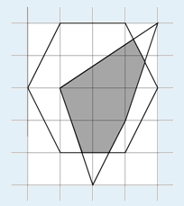

逆时针给出 $n$ 个凸多边形的顶点坐标，求它们交的面积。例如 $n=2$ 时，两个凸多边形如下图：

则相交部分的面积为 $5.233$。
第一行有一个整数 $n$，表示凸多边形的个数，以下依次描述各个多边形。第 $i$ 个多边形的第一行包含一个整数 $m_i$，表示多边形的边数，以下 $m_i$ 行每行两个整数，逆时针给出各个顶点的坐标。
输出文件仅包含一个实数，表示相交部分的面积，保留三位小数。
2 6 -2 0 -1 -2 1 -2 2 0 1 2 -1 2 4 0 -3 1 -1 2 2 -1 0
5.233
$100\%$ 的数据满足：$2 \le n \le 10，3 \le m_i \le 50$，每维坐标为 $[-1000,1000]$ 内的整数。
 Comet OJ
Comet OJ